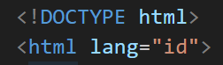
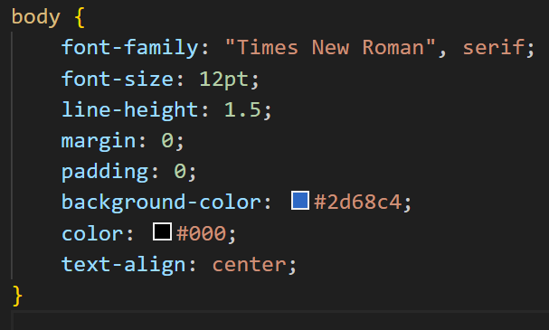

Halo! Ini adalah tampilan teknis laporan di HTML!
File PDF Teknis Laporan
Screenshot Kode dan Penjelasan:
1. index.html

Menandakan halaman ini memakai HTML5 dan berbahasa Indonesia. Ini memberi tahu browser bagaimana menampilkan isi halaman.
Bagian ini menyimpan informasi penting seperti: meta charset agar huruf tampil benar, meta viewport agar tampilan responsif di HP/laptop, title untuk judul tab browser, link untuk menghubungkan file CSS yang mengatur desain.
Tempat semua konten yang akan terlihat di layar. Class page1 digunakan untuk pengaturan tampilan lewat CSS.
Berfungsi sebagai wadah utama semua elemen di halaman agar tata letaknya rapi dan mudah diatur.
Menampilkan gambar profil. Atribut alt memberi teks pengganti jika gambar gagal dimuat, dan class="profile-img" dipakai untuk mengatur bentuk/ukuran foto lewat CSS
Berisi perkenalan diri, hobi, dan fakta unik. Tag h2 untuk judul, p untuk paragraf, dan b menebalkan teks “Fun fact”.
Membuat tombol yang mengarah ke halaman berikutnya (Article.html). Class next-btn digunakan untuk memberi gaya tombol melalui CSS.
Menutup semua tag dan menandakan akhir dari dokumen HTML.
2. Article.html
Baris ini menunjukkan bahwa dokumen menggunakan HTML5 dan bahasa utamanya adalah Bahasa Indonesia (lang="id"). Ini penting agar browser dan mesin pencari memahami format serta bahasa halaman.
Bagian
berisi informasi dasar halaman: charset="utf-8" memastikan semua karakter dan simbol tampil benar. viewport membuat tampilan responsif di layar HP dan laptop. title menampilkan judul di tab browser. link menghubungkan halaman ini ke file CSS eksternal (style.css) yang mengatur tampilan.Tag
berisi seluruh konten yang terlihat di layar. Kelas page2 dipakai untuk memberi gaya berbeda (via CSS) khusus untuk halaman artikel ini — misalnya warna latar, tata letak, dll.Kedua div ini adalah wadah utama halaman. .outer-bg kemungkinan memberi latar belakang berwarna (misalnya biru seperti di panduan). .container berfungsi untuk membungkus seluruh isi agar tampil rapi di tengah halaman. role="main" dan aria-labelledby="page-title" adalah atribut aksesibilitas agar pembaca layar tahu bahwa ini adalah area utama halaman.
Bagian nav berisi navigasi — di sini hanya ada satu tombol “Previous Page” untuk kembali ke index.html. Kelas prev-btn dan btn dipakai untuk membuat tombol bergaya lewat CSS (biasanya berbentuk kotak dengan warna latar).
Menampilkan judul utama halaman. Kelas center-title biasanya membuat teks di tengah, dan id="page-title" menghubungkan elemen ini ke atribut aksesibilitas di atas.
Ini bagian inti halaman yang menampilkan file PDF laporan teknis langsung di halaman web. Elemen iframe digunakan untuk menyematkan (embed) file PDF. Atribut src="teknis-laporan-I.pdf" menunjuk ke file PDF yang ada di folder yang sama. width="100%" dan height="420" mengatur ukuran tampilan PDF. Jika iframe tidak didukung, ada teks cadangan (fallback) dengan tautan agar pengguna bisa membuka PDF di tab baru.
Bagian ini disiapkan untuk menampilkan gambar hasil screenshot kode HTML dan tampilannya, serta penjelasan singkat tentang kode. Sementara ini masih berupa div kosong sebagai placeholder. Nantinya, kamu bisa menggantinya dengan tag img:
Bagian footer berisi keterangan tambahan di bagian bawah halaman. Pesan ini mengingatkan bahwa semua file gambar atau video harus disimpan di dalam folder asset/.
Menutup seluruh elemen pembungkus (container, outer-bg, body, dan html). Menandakan akhir dari struktur dokumen.
3. Style.css
Font menggunakan Times New Roman dengan gaya serif klasik, cocok untuk tampilan formal seperti dokumen atau portofolio. Ukuran teks 12pt dan jarak antar baris (line-height) 1.5 membuat teks lebih mudah dibaca. Margin dan padding diatur ke nol agar tidak ada ruang kosong bawaan di tepi halaman. Latar belakang halaman (background-color) menggunakan warna biru (#2d68c4), memberi kesan profesional dan tenang. Warna teks (color) hitam (#000), kontras dengan latar belakang biru. Penataan teks (text-align) diatur ke tengah, membuat elemen-elemen di dalam body secara default berada di tengah halaman.
Lebar maksimum (max-width) dibatasi hingga 700px agar tampilan tidak terlalu lebar di layar besar. Margin: 40px auto berarti jarak atas–bawah 40px dan sisi kiri–kanan otomatis, sehingga kontainer berada di tengah halaman. Latar belakang putih membuat isi konten kontras dengan warna biru halaman. Padding 20px memberi ruang di dalam kontainer agar teks tidak menempel ke tepi. Border-radius 12px melengkungkan sudut kotak agar tampil lembut. Box-shadow menambahkan efek bayangan halus di sekitar kotak, memberi kesan mengambang di atas latar belakang.
Ukuran tetap 120x120 piksel agar seragam. Border-radius 50% menjadikannya berbentuk lingkaran sempurna. Object-fit: cover memastikan gambar tetap proporsional dan memenuhi area bulat tanpa terdistorsi. Border putih 3px memberikan bingkai yang rapi. Bayangan lembut (box-shadow) menambah dimensi dan kedalaman pada foto. Jarak bawah (margin-bottom) 15px memberi ruang antara foto dan elemen di bawahnya.
Tipe inline-block memungkinkan tombol memiliki lebar dan tinggi seperti blok, tapi tetap sebaris dengan elemen lain. Padding memberi ruang di dalam tombol, membuatnya mudah diklik. Warna latar biru tua (#0d47a1) dan teks putih memberi kontras jelas. Tidak ada garis bawah (text-decoration: none) agar terlihat seperti tombol, bukan link biasa. Border-radius 8px melunakkan sudut tombol. Huruf tebal (font-weight: bold) membuat teks tombol menonjol. Efek transisi (transition: 0.3s) membuat perubahan warna saat hover terlihat halus. Saat pengguna mengarahkannya dengan kursor (hover), tombol berubah warna menjadi biru lebih terang (#1976d2), memberi umpan balik visual yang interaktif.
Teks rata kiri–kanan (justify) membuat paragraf terlihat rapi seperti dokumen formal. Latar belakang putih konsisten dengan gaya kontainer utama. Padding 15px membuat isi tidak menempel ke pinggir. Border-radius 10px sedikit melengkungkan sudut. Margin-top 10px menambah jarak dari elemen di atasnya agar tidak menumpuk.
Latar belakang biru (#2d68c4) membuatnya senada dengan tema utama halaman. Padding 10px dan border-radius 10px menjaga tampilan tetap rapi dan lembut. Margin vertikal 20px memberi ruang di atas dan bawah agar tidak terlalu rapat dengan elemen lain.
Keduanya memiliki latar belakang biru yang sama, sehingga menjaga konsistensi visual antar halaman. Namun, pengaturan ini membuka kemungkinan untuk menyesuaikan warna atau gaya berbeda di masa depan (misalnya halaman 3 bisa punya warna lain).